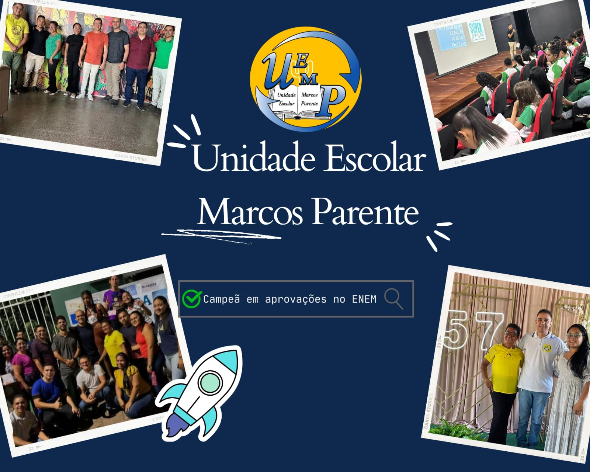
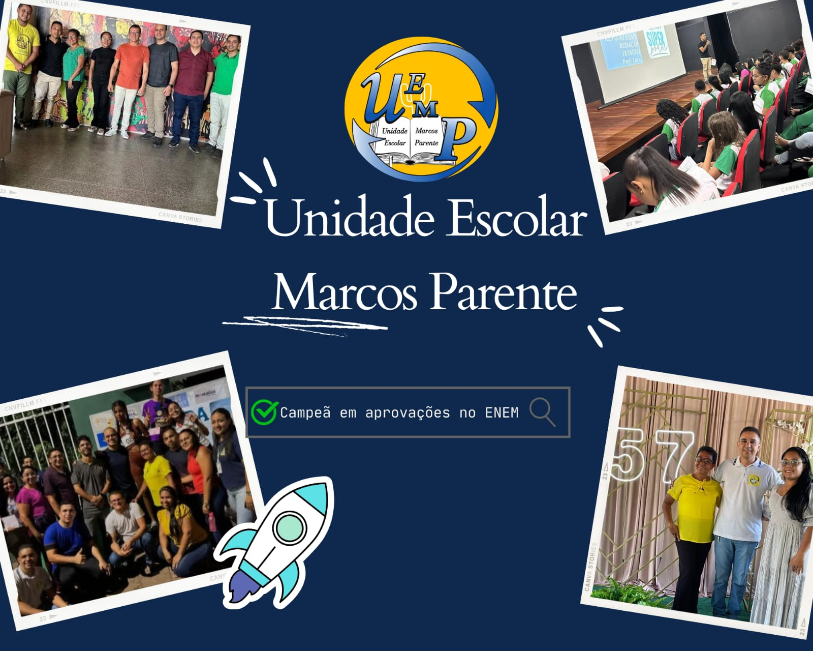

Homenagem à equipe escolar UEMP
Gislene Sousa/ Victor Vieira, 21 Novembro 2024.

"Educando para a formação de valores"
"Desde de 04 de novembro de 1967
Gislene Sousa/ Victor Vieira, 21 Novembro 2024.

Gostaria de deixar aqui as minhas sinceras felicitações a toda a equipe da UEMP, principalmente aos meus queridos professores, e também à direção, juntamente com o restante dos funcionários que trabalham para nos proporcionar uma escola melhor. Obrigado ao diretor Amadeus, que sempre busca ser um amigo para seus alunos. Obrigado aos zeladores por cuidarem tão bem da nossa escola. Aos professores uempianos , um grande abraço, e saibam que, por mais que os alunos reclamem, nós sabemos e somos extremamente gratos a todos os puxões de orelha, todos os conselhos e todos os ensinamentos de vocês. Sem dúvidas, a melhor de União e região. Queria agradecer também porque foi na UEMP que conheci minhas melhores amigas, amigas que eu quero levar para a minha vida toda; foi na UEMP que reencontrei grandes amizades, amizades que há muito não via. A UEMP é o que chamamos de grande família, temos discussões, reconciliações, declarações, e muita coisa boa. Valeu aí, UEMP!
Lívia Cardoso Carvalho ,3ª ano "C",21 de novembro 2024.
Os profissionais da Uemp são pessoas responsáveis, educadas e possuem visão de futuro. Os professores ensinam de forma clara e objetiva, às vezes de forma dinâmica, facilitando o aprendizado dos alunos.
Beatriz Mendes 2 ano A manhã, 21 Novembro de 2024.
Professores brilhantes ensinam para uma profissão. Professores fascinantes ensinam para a vida (Augusto Cury). Por isso, gostaria de deixar aqui meu depoimento e contar sobre a minha admiração pelos professores da UEMP, também aos funcionários que fazem parte da escola, professores que já contribuíram para a formação de grandes profissionais. Bons professores são inestimáveis, inspiram e entretêm, e como uma boa consequência acabamos aprendendo muita coisa mesmo sem dar conta(Nicholas Sparks). Um bom professor tem o poder de marcar vidas. E o que dizer do profissional que forma todas as profissões? Obrigado por cada ensinamento!
Gislene Sousa , 2 "A" tarde, 21 novembro de 2024.
Palavra alguma pode descrever a gratidão que tenho por cada professor, pelos ensinamentos, pelas suas lutas diárias e por motivar cada aluno. Obrigado aos profissionais de limpeza que fazem o possível para manter a escola numa boa condição, ao diretor, à equipe de coordenação e à equipe de secretaria por todo o empenho, dedicação, liderança e paciência. Gratidão a todos os colaboradores que fazem parte da formação de tantos estudantes.
Vitor Viera, 2º B Tarde , 21 Novembro 2024
A vocês, professores e funcionários da UEMP, meu sincero agradecimento por todo o esforço e dedicação. Vocês são verdadeiros inspiradores! Muito obrigado por tornar a nossa jornada acadêmica tão rica e gratificante. Parabéns a toda a equipe UEMP.
Delcimar Borges de Andrade,2° A manhã,22 Novembro 2024.
Hoje, com muita alegria e gratidão, celebro os 57 anos da nossa querida Unidade Escolar Marcos Parente. Como ex-aluno desta instituição, tenho a honra de refletir sobre o impacto que a escola teve na minha vida e de reconhecer a importância que ela continua a ter para todos os seus alunos. Quando pisei pela primeira vez nas suas salas de aula, jamais imaginei o quanto aquele ambiente iria moldar minha trajetória. A dedicação dos professores, o acolhimento dos funcionários e o exemplo de perseverança dos meus colegas de turma contribuíram imensamente para o meu crescimento pessoal e acadêmico. A escola não foi apenas um lugar de aprendizado formal, também um espaço de desenvolvimento humano, onde valores como respeito, responsabilidade e solidariedade foram cultivados. Comemorando agora 57 anos de história, a Unidade Escolar Marcos Parente se consolidou como um pilar de educação de qualidade e de transformação social. A cada geração de alunos, a escola se renova, mas mantém viva a sua missão de formar cidadãos conscientes e preparados para enfrentar os desafios do mundo. Para os atuais alunos, deixo uma mensagem de encorajamento. Aproveitem cada oportunidade de aprendizado que essa instituição oferece. O caminho nem sempre será fácil, mas lembrem-se de que a educação é a chave que abre as portas para um futuro promissor. Valorize cada momento vivido aqui, pois ele será fundamental para a construção do seu caráter e para a realização dos seus sonhos. Que a Unidade Escolar Marcos Parente continue sendo um lugar de inspiração, conhecimento e crescimento para muitas gerações que ainda virão. Parabéns pelos 57 anos de excelência educacional, e que venham muitos mais! Com carinho e gratidão, Gustavo Quaresma.
Ex aluno,Gustavo Quaresma , 21 Novembro de 2024.
Só agradecer ao esforço coletivo da equipe em continuamente nos motivar nos estudos, criar eventos divertidos e acadêmicos, além de incentivar que pensemos sobre o futuro que nós desejamos.
Lucas, 3°CM , 25 Novembro de 2024